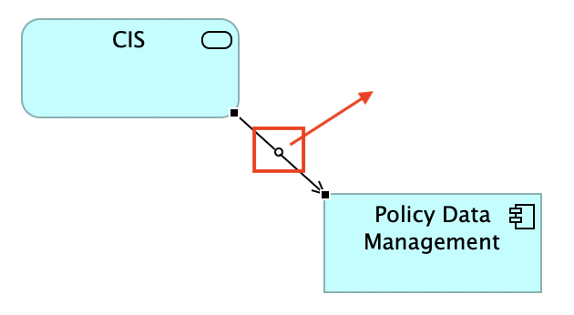
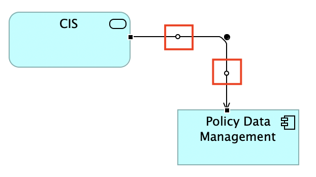

A connection can have any number of bend points so that it can be routed to form bends and deviations in the diagram.
To add a bend point to a connection firstly select it. A bend point creation handle (hollow circle) will appear in the middle of the connection:
A bend point creation handle
Drag the bend point creation handle to the desired position. As you drag the handle two new bend point creation handles are added to the connection and the added bend point now has a solid handle indicating that the bend point exists and you can move or delete it:
The main bend point move handle and two more bend point creation handles appear
You can continue to select and drag these handles to create new bend points or move existing ones. As a new bend point is created, two new creation handles will appear either side of the selected one.
To delete a bend point, select the bend point's handle and drag it so that the connection line becomes straight. Once the connection line is straightened the bend point will disappear.
Bend points snap to grid if "Snap to Grid" is turned on in the "View" menu. If you need finer control over placing the bend point you can over-ride this by holding down the Alt key on Windows, Alt/Shift on Linux, or the Ctrl key on Mac.
Note - bend points cannot be added to connections if the Connection Router Type for the View is set to "Manhattan". See here for more details.